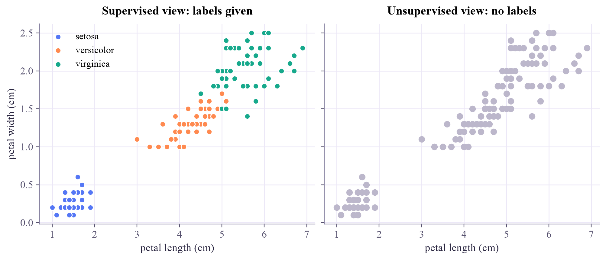

X shape: (150, 4) features: ['sepal length (cm)', 'sepal width (cm)', 'petal length (cm)', 'petal width (cm)'] labels: ['setosa' 'versicolor' 'virginica'] first flower: [5.1 3.5 1.4 0.2] -> setosa
Machine Learning
 about 11 min
about 11 min ml-w1d1.ipynb
ml-w1d1.ipynb
The four ways machines learn
A map of machine learning before we zoom in: supervised, unsupervised, semi-supervised and reinforcement learning.
In this lesson you will
- See a model as a function with knobs, and learning as choosing the knobs
- Tell the four kinds of learning apart from a one-line description
- Load a real dataset in Python and find its features and labels
Warm-up
1 minHello! Let's draw the map

Hi, I'm Qubi. I'm a qubit, but I love machine learning too, so I'll walk with you through this whole tutorial: nine weeks, one small lesson each weekday. Every lesson has an idea, something to play with, real code, a small exercise and a quick check, in about ten minutes.
Think about how you learned what a cat is. Someone pointed and said "cat!", many times, until you could do it yourself. That is one of the four ways machines learn too. Today we meet all four.
Big idea
4 minA model is a function with knobs
Almost every machine-learning method has the same shape. A model takes an input and produces an output . Inside it there are adjustable numbers, the parameters (theta). Think of them as knobs:
Learning means turning the knobs using experience (data) until the model behaves well. Data usually looks like a table: each row is one example, each column is a feature, and sometimes there is an answer column, the label .
That was one knob. A neural network can have millions. The idea stays the same.
What changes between methods is what kind of experience the learner gets. That gives the four families:
SupervisedExamples come with answers. Learn the rule . If is a category (spam / not spam) it is classification; if is a number (a price) it is regression.
UnsupervisedNo answers at all. Find structure on your own: groups (clustering), main directions (PCA), compact summaries (autoencoders).
Semi-supervisedA few answers plus lots of unlabeled data. The unlabeled data shows the shape; the few labels name the parts.
ReinforcementNo answer key, only rewards. An agent tries actions, sees what pays off, and learns a strategy (a policy).
The plan for these nine weeks
One topic per week: data and evaluation (week 1), regression and gradient descent (2), classification (3), kernels (4), neural networks (5), learning without labels (6), reinforcement learning (7), the rest of the classical toolbox (8), and deep learning for images and sequences (9). All the optimizing is done in PyTorch.
Most first machine learning courses cover the same families, so this tutorial also works as a visual companion to one.
Play
4 minSort the scenarios
Pick a card, then pick the box it belongs in. On a laptop you can also drag. Every card gets a short explanation.
Code
3 minFeatures and labels in Python
The notebook for this lessonEvery code cell below, with what it printed, is in
ml-w1d1.ipynb. To change the code and run it yourself, open the notebook in Google Colab (free, in your browser) or download it for your own Jupyter.Load the classic iris dataset: 150 flowers, 4 measurements each, and the species as the label.
from sklearn.datasets import load_iris
iris = load_iris()
X, y = iris.data, iris.target # X: features, y: labels
print("X shape:", X.shape) # 150 flowers, 4 measurements each
print("features:", iris.feature_names)
print("labels:", iris.target_names)
print("first flower:", X[0], "->", iris.target_names[y[0]])What it printed in the notebook
Now look at the same flowers twice: once with labels (what a supervised learner sees) and once without (what an unsupervised learner sees).
import matplotlib.pyplot as plt
fig, (left, right) = plt.subplots(1, 2, figsize=(9, 3.8), sharex=True, sharey=True, layout="constrained")
for k, name in enumerate(iris.target_names):
pick = y == k
left.scatter(X[pick, 2], X[pick, 3], s=36, label=name)
left.set_title("Supervised view: labels given")
left.legend(loc="upper left")
right.scatter(X[:, 2], X[:, 3], s=36, color="#bcb7cb")
right.set_title("Unsupervised view: no labels")
for ax in (left, right):
ax.set_xlabel("petal length (cm)")
left.set_ylabel("petal width (cm)")
plt.show()What it printed in the notebook

Finally, the knob from the widget above, as code:
import numpy as np
def tiny_model(petal_length, threshold):
"""Predict 1 (setosa) when the petal is short, else 0."""
return (petal_length < threshold).astype(int)
is_setosa = (y == 0).astype(int)
for threshold in [1.5, 2.5, 4.0]:
accuracy = np.mean(tiny_model(X[:, 2], threshold) == is_setosa)
print(f"threshold = {threshold:.1f} cm -> accuracy = {accuracy:.0%}")What it printed in the notebook
threshold = 1.5 cm -> accuracy = 83% threshold = 2.5 cm -> accuracy = 100% threshold = 4.0 cm -> accuracy = 93%
Your turn
3 minYour turn: let the computer turn the knob
In cell 3 you tried three thresholds by hand. Now make Python try many: every threshold from 1.0 to 6.0 cm in steps of 0.1. Print the range of thresholds that classify every flower correctly.
perfect = []
for threshold in np.round(np.arange(1.0, 6.01, 0.1), 1):
accuracy = np.mean(tiny_model(X[:, 2], threshold) == is_setosa)
# TODO: if the accuracy is perfect, remember this threshold in `perfect`
print("perfect thresholds found:", len(perfect))Need a hint?
np.arange(1.0, 6.01, 0.1) gives all the thresholds (the notebook rounds them to one decimal so that 2.0 really is 2.0). Keep the ones whose accuracy is exactly 1.0 in a list, then print the smallest and the largest.
Show a solution
perfect = []
for threshold in np.round(np.arange(1.0, 6.01, 0.1), 1):
accuracy = np.mean(tiny_model(X[:, 2], threshold) == is_setosa)
if accuracy == 1.0:
perfect.append(threshold)
print(f"{len(perfect)} perfect thresholds, from {min(perfect):.1f} cm to {max(perfect):.1f} cm")
print(f"The longest setosa petal is {X[y == 0, 2].max()} cm and the shortest of the others is "
f"{X[y != 0, 2].min()} cm: any threshold in that gap separates them.")What it printed in the notebook
11 perfect thresholds, from 2.0 cm to 3.0 cm The longest setosa petal is 1.9 cm and the shortest of the others is 3.0 cm: any threshold in that gap separates them.
You just wrote a (very small) learning algorithm: search the knob's values and keep the ones that fit the data. Everything in the coming weeks is a smarter version of this search.
Check yourself
2 minQuick check
Question 1 of 3
You have one million photos, and 500 of them are labeled cat or dog. Which kind of learning fits best?
Question 2 of 3
Predicting tomorrow's temperature (a number) from today's weather measurements is…
Question 3 of 3
What does a reinforcement-learning agent learn from?
Wrap-up
1 minToday in one sentence
Quantum link
All four families show up in quantum machine learning. A quantum circuit can be the model whose knobs are rotation angles (supervised). Quantum states can be clustered or compressed (unsupervised). Labeled quantum experiments are expensive, so a few labels plus many unlabeled shots is common (semi-supervised). And an agent can tune control pulses, rewarded by how close the result is to the target state (reinforcement).
Go deeper (optional)
An Introduction to Statistical Learning (ISLP, a free textbook), chapter 2.1: "What is statistical learning?". It uses the same picture of a model as a function that we estimate from data.
Next in Machine Learning: how real data becomes numbers a computer can learn from, and your first PyTorch tensors.

That's the lesson!
Tap the button to save it. Short and steady wins.
Marked by mistake? Undo